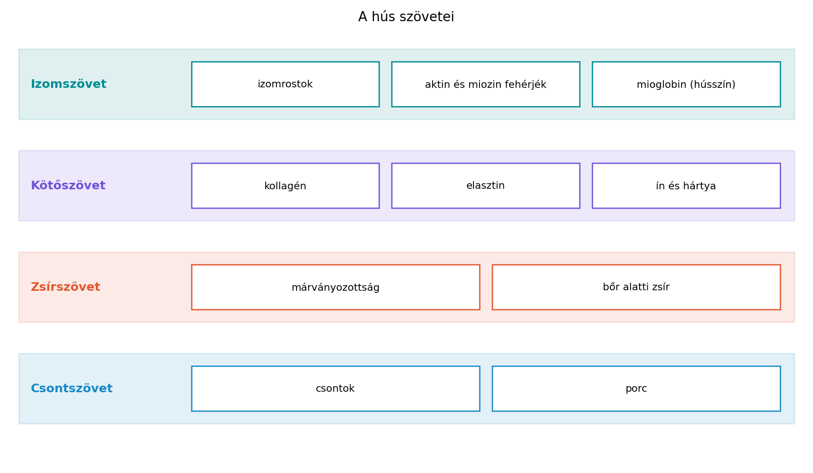
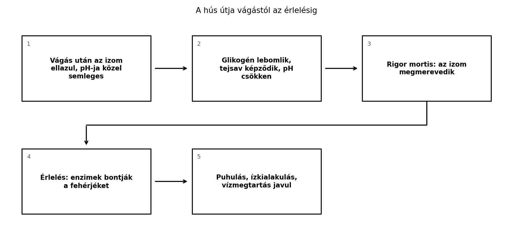
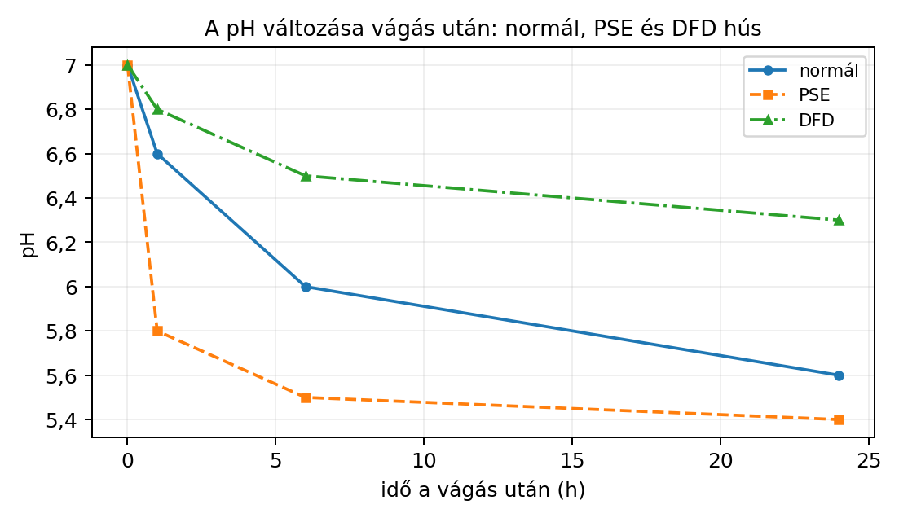

A reggeli áruátvételnél megérkezik a friss marhahátszín és a sertéslapocka. A séf azt mondja: a hátszínt gyorsan, rózsaszínűre sütjük, a lapockát viszont hosszan pároljuk. Miért kell ugyanabból a fajtájú élő állatból származó két izmot ilyen eltérően kezelni? A válasz a hús szerkezetében, főleg a kötőszövet mennyiségében rejlik. Ha ezt megérted, tudni fogod, melyik húsrész milyen hőkezelést kíván, és miért lesz a lapocka órák alatt puha, a hátszín viszont pár perc alatt is élvezhető.
A hús nem egynemű anyag, hanem élő szövetek rendszere. Képzeld el, hogy egy marhahús-szeletben három fő réteget látsz: a piros izomrostokat, az őket körülvevő fehér, hártyaszerű kötőszövetet és a fehér vagy sárgás zsírszövetet. A csont a vágási részeket határozza meg. Ezt a szerkezetet mutatja az alábbi rétegábra.

Az izomszövet adja a hús tömegének és fehérjetartalmának legnagyobb részét. A kötőszövet adja a szilárdságot, de hosszú hőkezelés nélkül rágóssá teszi a húst. A zsírszövet ízt, szaftosságot és energiát hordoz. A csontszövetből főzünk alaplevet. Ha ezt a négy szövetet felismered, meg tudod magyarázni, miért tér el a húsrészek viselkedése a konyhában.
Definíció. A hús konyhatechnológiai értelemben a vágóállatok és vadak izomszövete, amelyet rendszerint kötőszövet, zsírszövet és csontszövet is kísér. A húshoz soroljuk a belsőségeket is, bár azok nem izomszövetből állnak (ellenőrizendő: az élelmiszerjogi meghatározás pontos szövege).
Az izomszövet hosszú, vékony izomrostokból áll. A rostokban két fő fehérje található: az aktin és a miozin. Élő állatban ezek a fehérjék csúsznak el egymáson, és így jön létre az összehúzódás. A vágás után az izomrostok még rövid ideig összehúzódnak, ami merevséget okoz. Hőkezeléskor az izomfehérjék denaturálódnak, azaz kitekerednek, és a hús színe, állaga megváltozik. A színét a mioglobin nevű fehérje adja, amely oxigénnel érintkezve élénkpiros, hőkezelés hatására barna.
Konyhai szerep. A gyorsan süthető húsrészekben kevés a kötőszövet, és az izomrostok rövidek, ezért pár perc hőkezelés is elég. Ilyen például a marhahátszín vagy a sertésszűz.
A kötőszövet két fontos fehérjét tartalmaz: a kollagént és az elasztint.
Szabály. A sok kötőszövetet tartalmazó húsrészt hosszú, nedves hőkezeléssel készítjük, hogy a kollagén zselatinná alakuljon. A kevés kötőszövetű, rövid rostú húsrészt gyors, száraz hőkezeléssel sütjük, hogy ne száradjon ki.
Továbbvitt eredmény. Ezt a kapcsolatot használjuk a marha-, sertés- és bárányhúsok húsrészeinél Vágóállatok húsrészei: marha, borjú, sertés, bárány, a baromfinál Baromfi, a vadaknál Vadak és a halaknál Halak és egyéb hidegvérű állatok.
A zsírszövet a húsban két helyen jelenik meg: a bőr alatt és az izmok között. Az izmok közötti finom zsírszálakat márványozottságnak nevezzük. A márványozott hús szaftosabb, ízesebb, mert a zsír sütés közben megolvad, és bevonja az izomrostokat. A zsírszövet táplálkozástani szempontból energiaforrás, de túlzott fogyasztása kedvezőtlen. A zsírszövet mennyisége fajonként, fajtánként és húsrészenként is jelentősen eltér.
Összefüggés. A zsírszövet jó hőszigetelő, ezért a zsírosabb hús lassabban szárad ki. Ez az oka annak, hogy a márványozott hús grillezésre is alkalmasabb, mint a nagyon sovány hús.
A csontszövet ásványi anyagokban gazdag, és kocsonyásító anyagokat is tartalmaz. A csontos húsrészekből főzött levek ízesebbek, mert a csontból és a porcból ízanyagok és zselatinszerű anyagok oldódnak ki. A csontok jelzik a húsrész pontos anatómiai helyét, ezért a darabolásnál a csontok vezetik a szakácsot.
A hús átlagos összetétele fajonként és húsrészenként változik. Az alábbi táblázat tájékoztató értékeket mutat.
| Összetevő | Jellemző mennyiség (tömeg%) | Konyhai szerep | Táplálkozástani szerep |
|---|---|---|---|
| Víz | 60–75 | szaftosság, hőátadás | folyadékbevitel |
| Fehérje | 18–22 | alvadás, állag, szín | izomépítés, esszenciális aminosavak |
| Zsír | 2–20 | íz, szaftosság, energia | zsírsavak, zsírban oldódó vitaminok |
| Ásványi anyagok | körülbelül 1 | vízmegkötés, íz | vas, cink, foszfor |
| Vitaminok | kis mennyiség | szín, eltarthatóság | B-vitaminok, különösen B12 |
A hús fehérjéi biológiailag értékesek, mert tartalmazzák az esszenciális aminosavakat. A vörös húsok jó vas- és cinkforrások, a belsőségek pedig A- és B-vitaminokban gazdagok. A korszerű táplálkozási ajánlás szerint a húsfogyasztást mértékkel, változatosan érdemes tervezni, a feldolgozatlan sovány húsokat előnyben részesítve (ellenőrizendő: az OKOSTÁNYÉR aktuális szövege).
Jogszabály. Az állati eredetű élelmiszerekre, így a friss húsra is külön higiéniai szabályok vonatkoznak, az Európai Unió 853/2004/EK rendelete alapján. A vendéglátó konyhán csak állatorvosi vizsgálaton átesett, jelölt hús kerülhet felhasználásra. A hűtési lánc megszakítása növeli a mikrobaszaporodás kockázatát (ellenőrizendő: a rendelet pontos hivatkozása és a hazai előírások).
A frissen vágott hús még nem alkalmas azonnali sütésre. A vágás után több órás folyamat játszódik le, amelyet a szakácsnak ismernie kell.

Definíció. A vágás utáni merevség (rigor mortis) az a folyamat, amikor az izom a glikogén lebomlása után megmerevedik, mert az izomfehérjék összehúzódott állapotban rögzülnek. Ez a folyamat a vágás után néhány órával kezdődik, és fajonként változó ideig tart.
A vágás után az izomban lévő szénhidrát, a glikogén tejsavvá bomlik, ezért a hús pH-ja csökken. A friss hús pH-ja általában 5,5–5,8 közötti értékre áll be (ellenőrizendő: fajonkénti tankönyvi érték). Ez a savas közeg kedvez az eltarthatóságnak, mert gátolja számos káros mikrobát. Ezután a hús izommerevségbe kerül, majd fokozatosan oldódni kezd. Ezt a folyamatot nevezzük érlelésnek.
Definíció. Az érlelés a hús olyan enzimatikus folyamata, amelynek során a saját enzimek bontani kezdik az izomfehérjéket és a kötőszövet kollagénjét. Ennek eredménye a puhulás, a jobb vízmegtartás és a jellegzetes húsíz kialakulása.
Az érlelés két fő módja:
A szakács a gyakorlatban leggyakrabban az általa vásárolt, részben már érlelt hússal találkozik. Fontos, hogy a hűtött húst a felbontás után ne tartsuk melegen, mert az érlelési folyamatot a mikrobás romlás felülírja.
Higiénia. A hús érlelése és hűtött tárolása során a nyers húsból származó húslé más élelmiszert szennyezhet. A nyers húst mindig elkülönítve, lefedve, a hűtő alsó polcán tárold, hogy a csurgó lé ne csepegjen készételre. A hőmérsékletet rendszeresen ellenőrizd, és a hűtőt ne töltsd túl (ellenőrizendő: az üzemi HACCP-terv hőmérsékleti határai).
A hús minősége nem mindig tökéletes. Két jellegzetes hibát kell felismerni, főleg sertésnél.
A szakács ezeket a hibákat érzékszervileg észleli: a PSE-hús színe világos, felülete nedves, a DFD-hús sötét, tömör, és vágásfelülete alig nedvesedik. Ha ilyen húst lát, jelezze az átvevőnek, mert a konyhai felhasználás minősége és biztonsága romolhat.
A két hiba a pH-csökkenés üteméből és végértékéből érthető meg. Normál húsban a pH a vágás után órák alatt, egyenletesen csökken; PSE-húsban már az első órában nagyon gyorsan esik, amikor a hús még meleg; DFD-húsban alig csökken, magas marad. A grafikon szemléltető tanulási értékekkel mutatja a három lefutást.

Olvasd le: a PSE-görbe az első órában már 5,8-ra esik, a normál hús 24 órás végértékének (5,6) közelébe, miközben a hús még meleg; a savas és meleg közegben kicsapódnak a fehérjék és a hús vizet ereszt; a DFD-görbe 24 óra után is magas, ezért a hús sötét, száraz, és gyorsabban romlik.
A friss hús gyorsan romlik, mert magas a víz- és fehérjetartalma. Ezért a vágástól a felhasználásig hűtési láncot kell tartani.
Szabály. A hűtött húst 0–5 °C között tároljuk, a fagyasztott húst pedig –18 °C alatt (ellenőrizendő: hatályos hazai és uniós előírás, az üzemi HACCP-terv). A hűtési lánc megszakadásakor a hús felszínén a mikrobák száma gyorsan nő.
A fagyasztott húst nem szabad meleg vízben vagy szobahőmérsékleten kiolvasztani, mert a felszínén a mikroorganizmusok elszaporodhatnak, mielőtt a belseje kiolvad. A legbiztonságosabb a hűtőszekrényben, lefedve, lassan végzett felolvasztás. Ha a húst mikrohullámú készülékben olvasztjuk, akkor azonnal hőkezelni kell, mert a folyamat során egyes részek már felmelegszenek, sőt átsülhetnek.
Tilos. A felengedett húst visszafagyasztani, hacsak a gyártó vagy a hatósági szabály másként nem rendelkezik. A visszafagyasztott hús állaga és mikrobiológiai állapota is romlik.
A hűtött hús felhasználása előtt ellenőrizd a csomagolást, a jelölést, a származási helyet, a felhasználhatósági időt, és a hús színét, szagát, tapintását. A friss húsnak enyhe, nem kellemetlen szaga lehet, a felülete rugalmasan visszanyomódik, és nem tapadós.
A hús összetételét tápérték-számításhoz is tudnod kell. Az alábbi példa a későbbi Energia- és tápértékszámítás alfejezetet készíti elő.
Számítás. Mennyi fehérjét és zsírt, illetve mennyi energiát ad 250 g sertéskaraj, ha 100 g húsban 21 g fehérje és 10 g zsír van? A fehérje energiatartalmát 17 kJ/g, a zsírét 37 kJ/g értékkel számoljuk (tanulási érték, ellenőrizendő: az energia-átváltó tényezők az Energia- és tápanyagszükséglet, korszerű táplálkozás szerint).
Adott:
fehérje:
zsír:
Keresett: fehérjetömeg, zsírtömeg, energia.
Képlet:
Behelyettesítés:
Eredmény: 250 g sertéskaraj körülbelül 52,5 g fehérjét, 25 g zsírt és 1818 kJ energiát ad. Ez körülbelül 434 kcal, mert . Ellenőrzés: a tömeg nagyságrendje megfelel a 100 g-ra vonatkozó adatnak; az energia a két komponens összege.
A hús érzékszervi minőségét az átvételkor és a felhasználás előtt is ellenőrizd.
Hiba 1. A frissen vágott, még merev húst azonnal,
magas hőfokon sütik.
Ok. A hús még rigor mortis állapotban van, a fehérjék
merevek, a vízmegtartás rossz.
Helyes gyakorlat. Az érlelt húst válasszuk, vagy
hagyjunk a húsnak hidegben elegendő időt a merevség oldódására a
beszállító útmutatója szerint.
Hiba 2. A sok kötőszövetű lapockát gyorsan, száraz
hőkezeléssel sütik.
Ok. A kollagén nem kapott elég időt és nedvességet a
zselatinálódáshoz, ezért a hús rágós marad.
Helyes gyakorlat. Az ilyen húsrészt hosszú, nedves
párolással készítsük, amíg a rostok szétomlanak.
Hiba 3. A fagyasztott húst meleg vízbe teszik, hogy
gyorsabban olvadjon.
Ok. A felszín hamar eléri a veszélyes hőmérsékleti
tartományt, a baktériumok elszaporodnak.
Helyes gyakorlat. A húst hűtőszekrényben, lassan
olvaszd fel, vagy mikrohullámú olvasztás után azonnal hőkezeld.
Hiba 4. A nyers húst a hűtőben a készétel fölé
helyezik, és a húslé a salátára csöpög.
Ok. Keresztszennyeződés, ami ételfertőzést
okozhat.
Helyes gyakorlat. A nyers húst mindig a hűtő alsó
polcán, lefedve, a készételektől elkülönítve tárold.
Egy kisebb étterem konyháján a szakács friss, levákuumozott marhalábszárat kapott. Az étlapon marhapörkölt szerepelt. A szakács sietett, ezért a húst nagy darabokban, magas lángon gyorsan lepirította, majd alig egy órán át párolta. A vendég visszaküldte az ételt, mert a hús kemény volt. A séf kóstoláskor látta, hogy a kollagén még nem zselatinálódott, a hús rostjai nem váltak szét. A hibát az okozta, hogy a marhalábszár sok kötőszövetet tartalmaz, ezért legalább két-három órás lassú, nedves párolást igényelt volna, nem gyors sütést és rövid párolást. A tanulság: a húsrész szerkezetét mindig határozza meg a hőkezelési mód; a kötőszövetes húsrész párolási idejét nem lehet lerövidíteni.
1. feladat (A)
Mondd meg, milyen hőkezelést választanál egy kevés kötőszövetű
sertésszűzhöz és egy sok kötőszövetű marhalábszárhoz! Indokold a választ
a kötőszövet fehérjéje alapján!
2. feladat (A)
Csoportosítsd a következő szöveteket aszerint, hogy milyen konyhai
szerepük van: izomszövet, kötőszövet, zsírszövet, csontszövet. Például:
melyik adja a fehérjét, melyik a rágósságot, melyik az ízt, melyikből
lesz alaplé?
3. feladat (B)
Egy beszállító vákuumcsomagolt hűtött húst hoz. A csomagolás
felfúvódott, a hús felülete tapadós, szaga enyhén savanykás. Milyen
lépéseket teszel az átvételnél? Milyen kockázatot jelentenek ezek a
jelek?
4. feladat (B)
Számítsd ki, mennyi energia van 400 g pulykamellben, ha annak
fehérjetartalma 23 g/100 g, zsírtartalma 1 g/100 g? Használd a 17 kJ/g
és 37 kJ/g energiaátváltókat. Váltsd át az eredményt kcal-ra is!
5. feladat (C)
Tervezd meg egy marhalábszár étel hőkezelési menetét a kötőszövet
átalakulása szempontjából. Milyen hőmérséklet-tartomány és idő szükséges
a kollagén zselatinálódásához? Miért nem alkalmas ez a húsrész gyors,
száraz sütésre? (A pontos időtartamot a receptúra adja meg, tanulási
értékként itt 2–3 óra lassú párolást feltételezünk, ellenőrizendő:
konkrét technológia.)
6. feladat (D)
Otthoni gyakorlás keretében (tankonyhán vagy oktatói felügyelettel)
válassz két különböző húsrészt: egy kevés kötőszövetűt (pl. sertésszűz)
és egy sok kötőszövetűt (pl. marhalábszár kocka). Készítsd el mindkettőt
a megfelelő módon: a szüzet kevés zsiradékban gyorsan pirítva, a
lábszárat hosszú párolással. Hasonlítsd össze az állagukat, a rostok
szétválását. Dokumentáld a hőkezelési időt, hőmérsékletet és az
érzékszervi eredményt. Biztonsági korlát. Ezt a
műveletet tankonyhán vagy oktatói felügyelettel gyakorold; otthon csak a
leírt biztonsági feltételekkel. A nyers hús kezelésekor tartsd be a
keresztszennyeződés szabályait.
Önellenőrzés – válaszok
1. feladat (A)
A sertésszűzhöz gyors, száraz hőkezelést, például rövid pirítást vagy
grillezést választanék, mert kevés benne a kötőszövet, és az izomrostok
rövidek. A marhalábszárhoz hosszú, nedves párolást vagy főzést
választanék, mert sok benne a kollagén, amely 80–100 °C-on, nedvességben
alakul zselatinná.
2. feladat (A)
Izomszövet: a fehérje legnagyobb részét adja, sütéskor denaturálódik.
Kötőszövet: a rágósságért felelős kollagén és elasztin; a kollagén
zselatinná puhul, az elasztin nem. Zsírszövet: ízt és szaftosságot ad,
márványozottságot képez. Csontszövet: alaplevet ad, ásványi anyagokat
old ki.
3. feladat (B)
A felfúvódott csomagolás gázképző mikrobák jelenlétére utal. A tapadós
felület és savanykás szag a romlás jele. Az ilyen húst vissza kell
utasítani, vagy ha már bekerült, el kell különíteni, és értesíteni a
vezetőt. Nem szabad felhasználni, mert ételfertőzést okozhat.
4. feladat (B)
Fehérjetömeg:
.
Zsírtömeg:
.
Energia:
.
Átváltás:
.
Tehát körülbelül 1712 kJ, azaz 409 kcal.
5. feladat (C)
A marhalábszárat először lepirítjuk forró zsiradékban, hogy ízanyagok
keletkezzenek. Ezután felöntjük alaplével vagy vízzel, fedő alatt lassú,
körülbelül 2–3 órás párolással készítjük (ellenőrizendő: a receptúra
ideje). A hőkezelés során a kollagén 80–100 °C-on, nedves közegben
zselatinná alakul, a hús omlóssá válik. A gyors, száraz sütés ezért nem
alkalmas, mert a kollagén nem oldódik, és a hús rágós marad.
6. feladat (D)
A sertésszüzet gyorsan, de a vastagabb részben mért legalább 75 °C-os
maghőmérsékletig sütjük (ellenőrizendő: HACCP-terv); pihentetés után
szaftos, puha. A marhalábszár hosszú párolás után szétomlik, a rostok
között zselatinos szaft képződik. A dokumentációban feljegyezzük a
hőkezelési időt, a maghőmérsékletet (kötelező adat) és az érzékszervi
megfigyeléseket. A nyers hús kezelésekor külön eszközöket és deszkát
használunk, a kész ételhez nem nyúlunk a nyers hús után kézmosás
nélkül.
A hús izomszövetből, kötőszövetből, zsírszövetből és csontszövetből áll. Az izomszövet adja a fehérjét és a hús színét; a kötőszövet kollagénje hosszú, nedves hőkezeléssel, körülbelül 80–100 °C-on zselatinná alakul, ezért puhul a hús. Az elasztin nem oldódik. A zsírszövet ízt és szaftosságot ad. A hús összetétele: víz 60–75%, fehérje 18–22%, zsír 2–20%, ásványi anyagok és B-vitaminok. A vágás után rigor mortis alakul ki, majd az érlelés során enzimek puhítják a húst. Az érlelés lehet száraz (dry aged) vagy nedves (wet aged). A PSE-hús sápadt, puha, vizenyős; a DFD-hús sötét, kemény, száraz. A hűtött húst 0–5 °C-on, a fagyasztottat –18 °C alatt tároljuk; a fagyasztott húst hűtőszekrényben olvasztjuk, visszafagyasztani tilos. Továbbvitt eredmény. A kötőszövet-tartalom határozza meg a hőkezelési módot, ezt használjuk a vágóállatok húsrészeinél Vágóállatok húsrészei: marha, borjú, sertés, bárány, a baromfinál Baromfi, a vadaknál Vadak és a halaknál Halak és egyéb hidegvérű állatok.